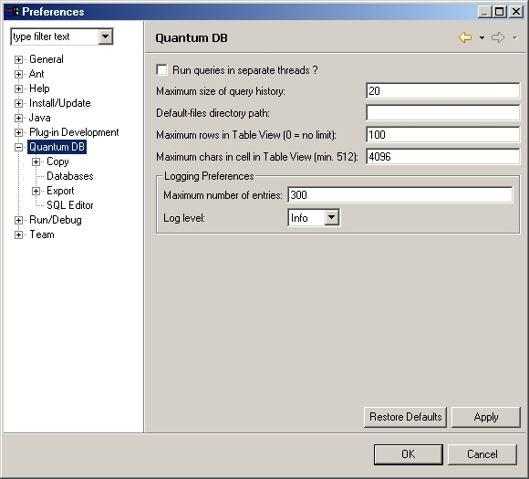
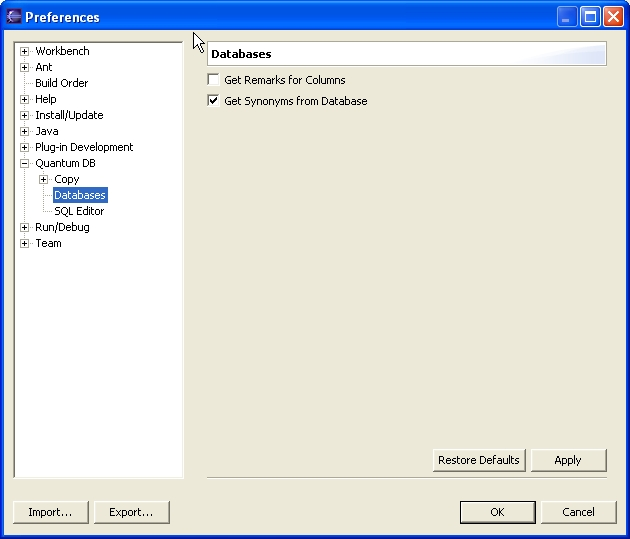
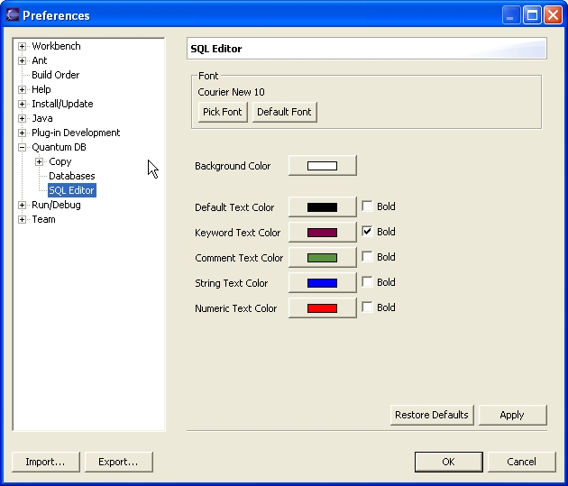
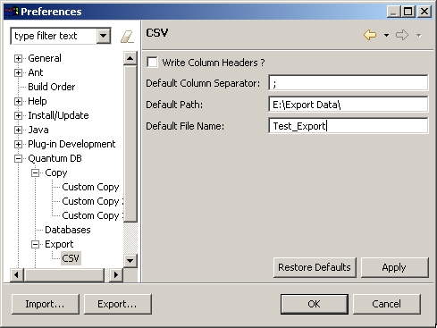
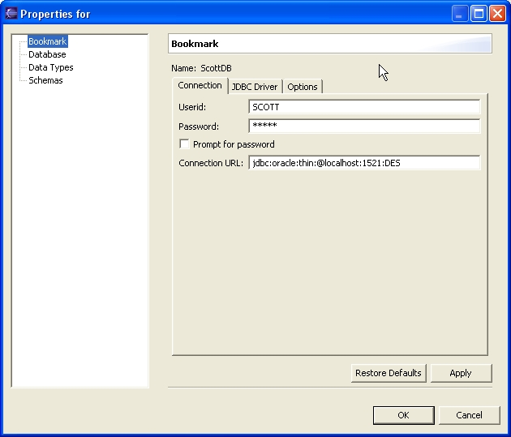
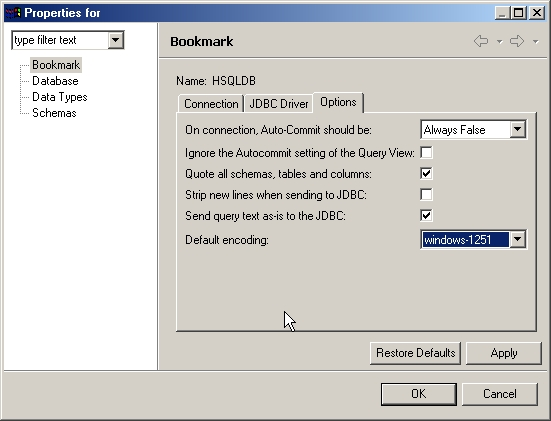
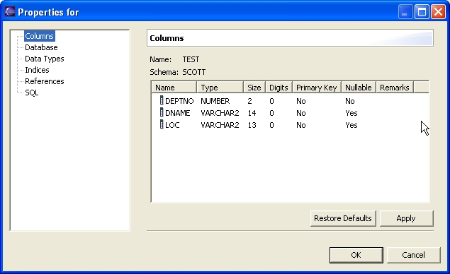
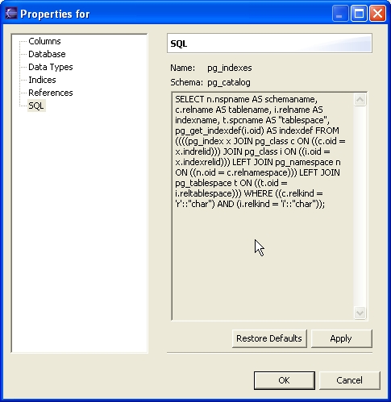

As in other plugins in Eclipse, we must differentiate between Preferences and Properties. Preferences apply to all of the items in the plugin, and properties only to one.
The Quantum generic preferences are accessed in the same place as other Eclipse
plug-ins, under Window > Preferences , and then Quantum
DB.
The properties that apply to a particular item will be accessed selecting the item and clicking on "Properties" in the context menu.
The Quantum preferences tree is to date like this. The main Preferences screen, that you get when you select the top of the tree (Quantum DB, like in the image), is:

The Maximum size of query history is self-explanatory.
The Default-files directory path is not (self-explanatory, I mean).
Quantum DB allows (from version 2.4.5) the possibility of having a default
bookmark file, for new installations. This bookmak file will be called def_bookmarks_<operating-system>.xml,
and is to be found in the path set in Default-files directory path preference.
The "<operating-system>" part of the file name is the Eclipse
abbreviation for operating systems. So if you are in a Windows system, the file
name will be def_bookmarks_win32.xml, if you are in linux, def_bookmarks_linux.xml,
etc. This makes easier to bundle Quantum with other plugins, and offer a ready-made
default connection. If no path is given, Quantum will look in the Eclipse installation
directory for the file.
The Maximum rows in Table View (0 = no limit) allows the user to set a limit (default 200) to the rows that the Table View will show when displaying a Table, View, or Query. If you set it to 0, all the rows will be displayed, what can easily leave you out-of-memory, so use with care.
The Maximum chars in cell in Table View allows you to change the 2048 default for the maximum cell buffer size in case you have cells holding more text that that.
The Loggin Preferences refer to the Quantum SQL Log view. You can set the maximum number of saved entries, and the level of detail of the logging.
Copy preferences asks only for the Normal Copy Separator, that only is applied when copying several columns. If you select several columns from the bookmarks view, and hit Copy, the column names will be copied to the clipboard, separated by the separator you have selected. For more complex copy customization, there are the three next preference pages, the Custom Copy. As custom copy is rather complex, it's described in a separate page. Click the preceding link to learn about it.
Database preferences set some general preferences for databases. These could possibly one day be made into bookmark properties. To date, they only work for Oracle, and they are selectable because the Get Remarks for Columns option makes for a extremely slow column query (when you expand a table to see the columns it has).

Get Remarks for Columns allows the user (for now only for Oracle) to see the possible remarks defined for the columns. These will be shown in the XML generated when you copy a table, or in the Properties of the table.
Get Synonyms from Database makes the bookmark display not only the tables and views, but also the synonyms, marked with a different icon. This option is also to date only available for Oracle databases.
This preferences page is pretty much self-explanatory. It allows you to choose the font for your SQL Editor view, the colors of the background and the different syntax highlighting elements.

Depending on your configuration of quantum features, you'll have export capabilitites. The configuration options for the Export capabilities are defined in the Export item. The only general option for now, is the possibility of making Quantum not ask you for confirmation when overwriting exported files.
There are preferences too for the CSV (Comma Separated Values) export.

You can set the default for writing column headers, with the Write Column Headers ? check box.
The Default Column Separator text box gives you the possibility of changing the default for the separator between data columns. Usually is a comma, as the name implies, but, at least for some applications (read Excel), that changes depending on the localization settings of the operating system.
You can also set a default path for you saved files, and a default file name, so you don't need to give one when making fast export tests.
Selecting a Bookmark in the Bookmark view, and then using the context menu to get the Properties, gets you the following dialog:

In the first selection of the lef tree (Bookmark) you get to change some options of the Bookmark. The first tab, shown in the image, allows to change the Connection data. You can also change the JDBC driver using the second tab. Those options are the same as when creating a bookmark. Refer to "Creating a bookmark" for more info.
The third tab, Options, allows you to change two options of the Bookmark (at the moment). The first one is the Auto-Commit feature. It has three possibilities: Always True, Always False and Last Saved. If you select Always True, all your SQL statements issued against that bookmark will be automatically committed on completion. So if you make an INSERT statement, the inserted data will be part from the shared database table from the moment the INSERT is finished. If you select Always False, you won't have any automatic commit, and you'll have to manually commit all your SQL statements that modify data in the database. This selection is de default selection for that bookmark, and will be used when the bookmark is open. Then you can change the auto-commit value using the toolbar menu in the SQL Query Editor view.
If you select the third option Last Saved, then your selection in the toolbar menu of the SQL Query Editor view will be remembered and used the next time you open that bookmark.

The second one, Ignore the Autocommit setting of the Query View, does just that. If set, the connection for that bookmark will have the AutoCommit defined in the first option, no matter what the Query View says. Note that this behaviour will be silent, so you have to be sure of what you are doing when setting this option, specially if you have the "on-connection AutoCommit" option to Always True.
The third one,Qoute all schemas, tables and columns, permits you to quote all schemas, tables and columns in the quantum generated SQL. The default is unchecked, that is, quote only the names that have spaces, signs, mixed case or are a reserved keyword (this last only from version 2.4.5). Quoting everything is safer, but uglier on display.
Strip new lines when sending to JDBC is an option thought for some JDBC drivers for DB2, that seem to get confused by newlines. Don't check it if you have not that particular problem. The newlines are substituted by spaces. Default unchecked.
Send query text as-is to the JDBC does exactly that. Normally Quantum will parse the queries text and divide it into queries and send those queries one by one to the JDBC driver. However, sometimes is better to forget about that and just send what you wrote exactly as it is to the JDBC driver (if Strip new lines when sending to JDBC is checked, it's still applied). Default unchecked.
Default encoding defines a default encoding for all tables in that bookmark. Useful for not having to change the encoding every time. Leave blank (default) if the normal encoding applied by the java machine suits you fine.
The tree item Schemas allows you to change the visible schemas in your bookmark. It's the same as the Schema selection page in the Create New Bookmark wizard.
The Database tree item simply shows you information about the database to which the bookmark connects. The Data Types is similar, but shows info about the data types supported by that database. Both are merely informational, you cannot change anything there. These two categories are common to all items, so if you only see them it's because the item has no properties of its own (like the Quick List, for example).
Tables, views and sequences properties have the same elements, even if some not apply, like Indices and References for View, for example.
The first category is Columns, where you can see the info for the columns of the selected Table or View. No change is possible there. Indices and References are also displays of the indices and references of the table.

SQL shows the SELECT clause used to create the view . Note that it may not be exact, as clauses like WITH CHECK OPTION can be not included (check the SQL92 standard) and, in any case, it'll depend on the database, as IBM databases tend to include the CREATE clause, for example. Some databases are not implemented yet, so if you see a blank SQL, contact the Quantum developers with info about the right query for your database.
